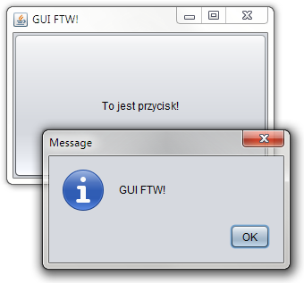

Zdarzenia w GUI FTW!
Tradycyjnie w Swingu bądź SWT żeby obsłużyć zdarzenie musimy utworzyć
nową implementację jakiegoś interfejsu, np. MouseListener a potem
go zarejestrować w obiekcie, którego zdarzenia nas interesują.
button.addMouseListener(new MouseListener() {
public void mouseClicked(MouseEvent event) {
//... obsługa zdarzenia
}
public void mouseEntered(MouseEvent event) {
//... obsługa zdarzenia
}
public void mouseExited(MouseEvent event) {
//... obsługa zdarzenia
}
public void mousePressed(MouseEvent event) {
//... obsługa zdarzenia
}
public void mouseReleased(MouseEvent event) {
//... obsługa zdarzenia
}
});
Jeśli obchodzi nas tylko jedno zdarzenie, wygodnie jest dziedziczyć po
klasie MouseAdapter, która implementuje wszystkie metody jako puste,
wystarczy więc zaimplementować jedną metodę:
button.addMouseListener(new MouseAdapter() {
public void mouseClicked(MouseEvent event) {
//... obsługa zdarzenia
}
});
Jak widać, trzeba się sporo opisać zanim dotrze się do miejsca, gdzie umieści się właściwy kod, nawet w wersji z adapterem. Jeśli jest możliwe napisanie kodu krótszego i przynajmniej tak samo dobrze wyrażającego co chcemy osiągnąć to moim zdaniem warto.
Jak to wygląda w GUI FTW!?
Obsługę zdarzeń wrzucamy do arkuszy stylów. Wygląda to tak jak każda inna właściwość (tekst, kolor, itd.) poza tym, że nazwą właściwości jest specyfikacja zdarzenia a wartością jest funkcja która je obsłuży. Dzięki temu zyskujemy również na wszystkich zaletach arkuszy stylów, np. można obsłużyć zdarzenia z wielu obiektów na raz.
(stylesheet [[:cos :drugie-cos] [:text "Coś!"
<spec-zdarzenia> <funkcja>]])
Specyfikacja zdarzenia
GUI FTW! musi znać dwie rzeczy: nazwę interfejsu *Listener i jedną
metodę do zaimplementowania — nazwę zdarzenia. Trzeba to podać w
takiej formie:
<nazwa interfejsu>+<nazwa metody>
Czyli np. mouse+mouse-clicked albo
action+action-performed. Odpada dzięki temu spora część zbędnego
kodu z pierwszego przykładu. Widać coś jeszcze: np. w
mouse+mouse-clicked słowo mouse powtarza się. Ponieważ występuje
to dość często dodałem skrót: jeśli napiszemy ++ zamiast + możemy
pozbyć się zbędnego słowa.
mouse++clicked -> mouse+mouse-clicked -> MouseListener.mouseClicked
Dlaczego nie uniwersalne on-click albo on-mouse-over?
Takie rozwiązanie na pewno byłoby intuicyjne dla osób
początkujących. Nie widzę jednak sensu gdy mouse++clicked jest
wystarczająco wymowne. Poza tym powodowałoby zwiększenie kodu w GUI
FTW! specyficznego dla bibliotek, które obsługuje (w tym momencie
Swing i SWT).
Dzięki temu, że GUI FTW! wymaga podania nazwy interfejsu i metody, możliwa jest obsługa zdarzeń wymyślonych przez programistę na poziomie równym z tymi wbudowanymi w Swing bądź SWT.
Funkcja obsługująca
W tym momencie funkcja obsługująca zdarzenie ma jeden argument: zdarzenie, które wystąpiło. Może to być zarówno funkcja anonimowa jak i nazwa funkcji zdefiniowanej w innym miejscu.
Przykład
Rozwinę lekko przykład z poprzedniego wpisu (utrzymując poziom hellołłorldowy). Dla przypomnienia struktura interfejsu:
(def window
(swing
[JFrame [*id :okno-ftw]
[JButton [*id :przycisk-omg]]]))
Do arkusza styli dodamy obsługę zdarzenia:
(def sheet
(stylesheet
[:okno-ftw] [:title "GUI FTW!"
:size ^unroll (300 200)
:visible true]
[:przycisk-omg] [:text "To jest przycisk!"
:mouse++clicked
(fn [event]
(JOptionPane/showMessageDialog nil "GUI FTW!"))]))

Pełny kod tego przykładu znajduje się tutaj.